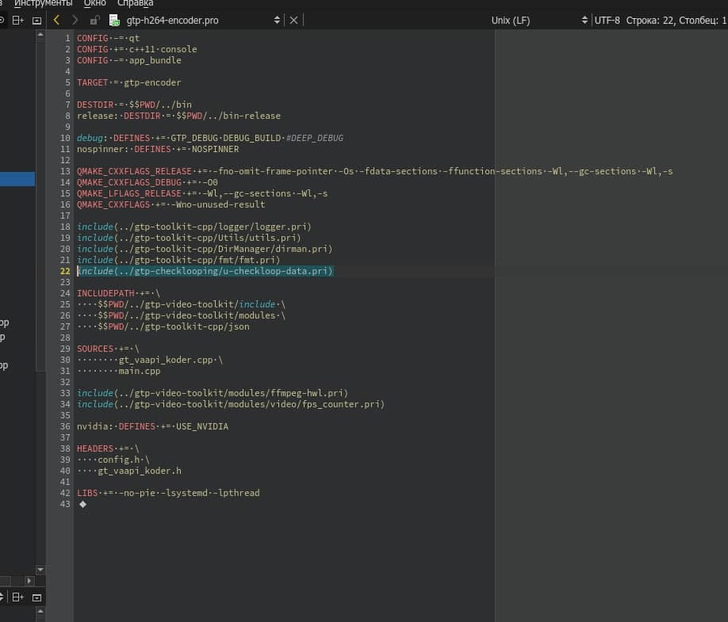

|
Проверка модулей на зацикливание
1. Размещение на gitlab:
Gitea: gtp-checklooping
GitLab: gtp-checklooping
2. Краткое описание:
В диспетчере реализован функционал, позволяющий контролировать каждый модуль на зацикливание и передавать от модуля в диспетчер статус состояния.
Для связи с диспетчером используется shared memory
Если в контролируемом цикле перестанет передаваться статус, то диспетчер обнаружит это и через некоторое время перезапустит модуль.
3. Интеграция в проект:
Для использования контроля зацикливания в модуле нужно добавить в проект три файла:
- u-checkloop-data.hpp
- u-checkloop-client.hpp
- u-checkloop-client.cpp
Понадобится также подключить стандартную библиотеку librt ( -lrt ) для работы с shared memory
4. Пример использования функций для контроля зависаний модуля:
#include <u-checkloop-client.hpp>
#include <unistd.h>
#include <stdio.h>
bool enaWork = true;
int main()
{
gtpCheckLoopClient dispatcherStatus;
if (!dispatcherStatus.Open()) {
fprintf(stderr, "Не удалось подключиться к диспетчеру");
}
while (enaWork) {
dispatcherStatus.Notify();
sleep(1);
}
dispatcherStatus.Close();
}
5. Прототипы функций в файле u-checkloop-client.hpp:
class gtpCheckLoopClient {
public:
// подключиться к диспетчеру
bool Open(void);
// отключиться от диспетчера
void Close(void);
// возможные статусы модуля для передачи в диспетчер
enum class Statuses {
Status_Off = 0,
Status_OK = 1
};
// передать статус в диспетчер. По-умолчанию передается Status_OK
void Notify(Statuses StatusCode = Statuses::Status_OK);
};
bool gtpCheckLoopClient::Open( void );
Функция подключается к shared memory диспетчера для последующей передачи статуса модуля.
Возвращает true при успешном завершении и false, если не удалось подключиться к диспетчеру
Вызов других функций при неуспешном подключении окажется бесполезным, тем не менее их вызов не приведет к ошибкам или исключениям.
void gtpCheckLoopClient::Close( void );
Функция отключается от shared memory диспетчера.
С этого момента вызов других функций окажется бесполезным, тем не менее их вызов не приведет к ошибкам или исключениям.
void gtpCheckLoopClient::Notify( gtpCheckLoopClient::Statuses StatusCode );
Функция передает в диспетчер статус модуля для контроля его на зависание.
Приложение A: исходный код контроля зацикливания модулей
1) Содержимое файла u-checkloop-client.hpp
2) Содержимое файла u-checkloop-client.cpp
3) Содержимое файла u-checkloop-data.hpp
(содержит описание структуры shared memory, используется в u-checkloop-client.cpp)
Приложение B: подключение класса контроля зацикливания в QT
1) Содержимое файла u-checkloop-data.pri
2) Подключение в проекте, пример

|